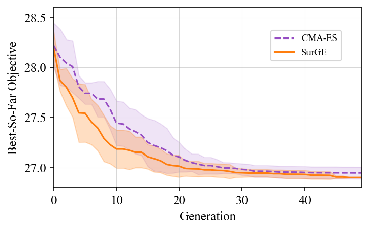
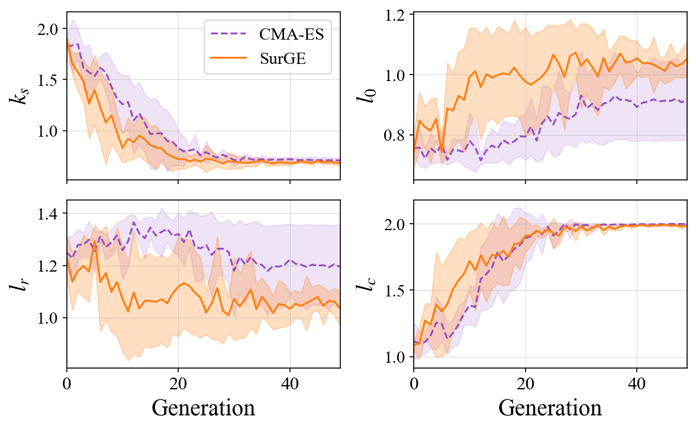
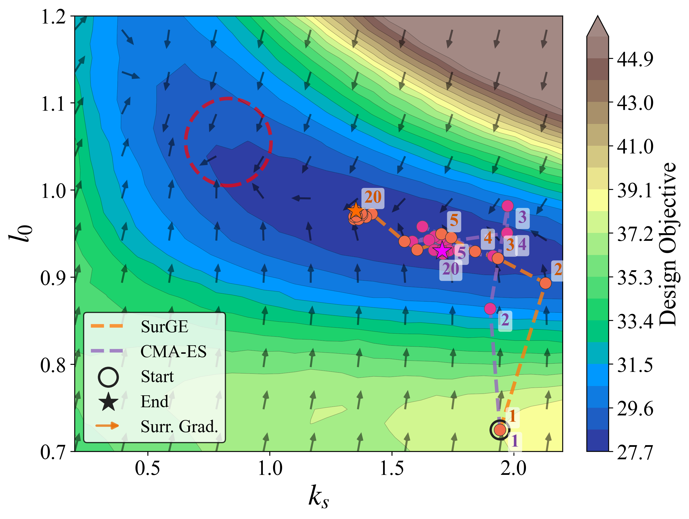

Design-Aware Policy
TODO

Co-design of legged robots with elastic elements is challenging due to the non-differentiability of contact dynamics and mechanism engagement. We presents SurGE, a framework that computes surrogate gradients of the design objective through a differentiable pipeline consisting of a kinodynamic single-rigid-body (Kino-SRB) model and a design-aware control policy, and injects them into CMA-ES via mean shift with cosine-annealed step decay.
On a 4-DOF design space of a hopping robot with unidirectional parallel spring, SurGE achieves 6 times lower cross-seed standard deviation and 18% tighter population concentration compared to vanilla CMA-ES, while matching or improving the best objective.
Hardware experiments on a 2D design subspace show that, starting from a hand-tuned initial design, SurGE reduces the design objective by 37.65% on hardware, with the improvement trend identified in simulation transferring consistently to the physical system. SurGE provides the potential to accelerate non-differentiable co-design problems in legged robots via surrogate model gradients.

TODO
TODO

TODO

TODO
TODO

TODO

TODO

TODO
@article{zhuang2026surge,
author = {Yulun Zhuang and Yue Qin and Justin Lu and Zelin Shen and Yichen Wang and Sicheng He and Yanran Ding},
title = {SurGE: Surrogate Gradient-guided Evolution for Co-design of Legged Robots with Parallel Elasticity},
journal = {arXiv preprint arXiv:TODO},
year = {2026},
}